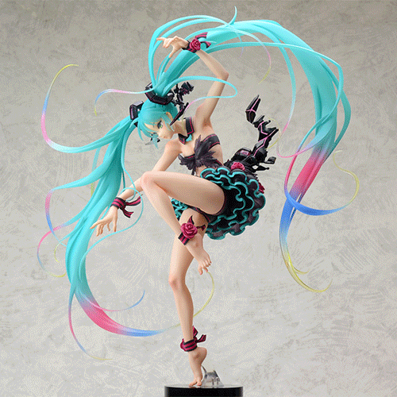

Figurines
For weebs like us just getting clothes of our favourite characters is not enough. Sometimes we desperately
need a small pouting miku on our desk just to survive in this world which makes us wanna have an isekai so
badly. Don't worry since we gotchu. No need to get hit by truck kun anymore because with our large
collection of figurines, statues, gundams and bobbleheads your normal life would become a weeb's paradise.
See More

Posters
You are not a real weeb until you room says so. After watching an anime that we like all that we want in life
is to get immersed in that world and be isekai'd into it. Well that's not possible but we have the second
best thing! Decorate your room with these high quality anime posters to become one with your favourite
animes.
See More

Body Pillows
Obviously it is not possible for weebs like us to make a website about anime merch and not include body
pillow or dakimakuras in it. We include body pillow for all of you people of culture. Browse through our
awesome collection of body pillows and become a true weeb by buying something which will cement anime into
your way of life. We are not responsible for what happens when your mom founds out that you sleep cuddling
next to Rias though ;)
See More